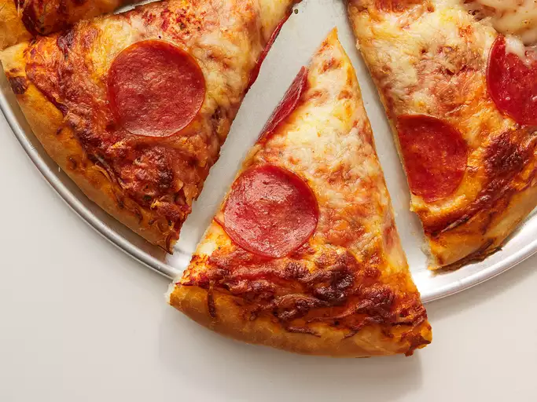

Homemade Pepperoni Pizza

Description
This pepperoni pizza recipe produces a quick and easy classic! Delicious homemade pizza crust and tomato sauce have never been easier.
Ingredients
- Dough
- Tomato Sauce
- Pepperoni
- Spices and Seasonings
- Mozzarella Cheese
Steps
- Preheat oven to 425
- Roll dough
- Spread sauce
- Add cheese
- Add pepperoni
- Bake pizza for 18 to 20 minutes